服装
异国剑士 p05 衣服贴图
先做衣服，再点编辑纹理
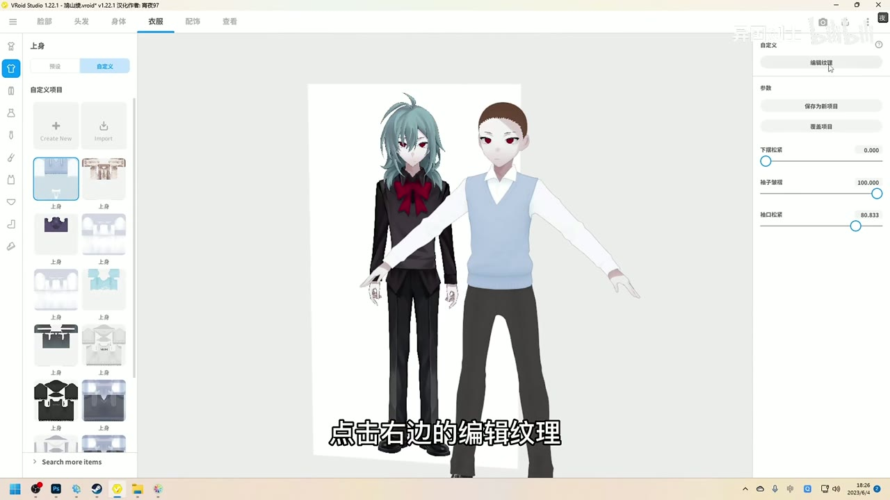
字幕说差不多调整完之后，建议先做衣服再做头发，先做头发可能会和衣服穿模。左边青发模型已经是黑制服和红蝴蝶结，右边棕发模型还是浅蓝背心。点右边的「编辑纹理」。这三条滑杆这一段没有被拖。
默认模板没有衬衫下摆
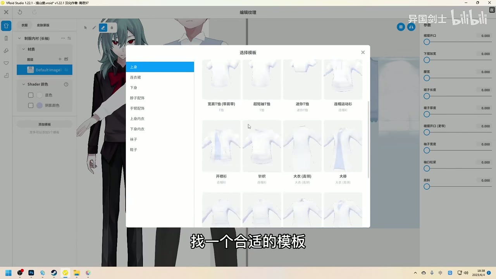
字幕说这个角色的衬衫下摆是露出来的，默认模板这边没有，所以得用别的形状捏一个类似的下摆。点左下角「添加模板」，旁边写着至多可以添加 5 个模板。窗口先停在上身，能看见宽肩 T 恤（带肩带）、超短袖 T 恤、迷你 T 恤、连帽运动衫、开襟衫、针织、大衣（高领）、大褂。字幕说看一下这个能不能用。右边这一屏的裙摆开口、下摆加宽、腰宽、裙子长度、裙子厚度、裙摆开口（更窄）、袖子宽度、袖口松紧、肩斜读数都是 0.000。随后左边多出一组「连衣裙（铅笔裙）」，身上盖上一条白裙。
用橡皮擦裁出下摆
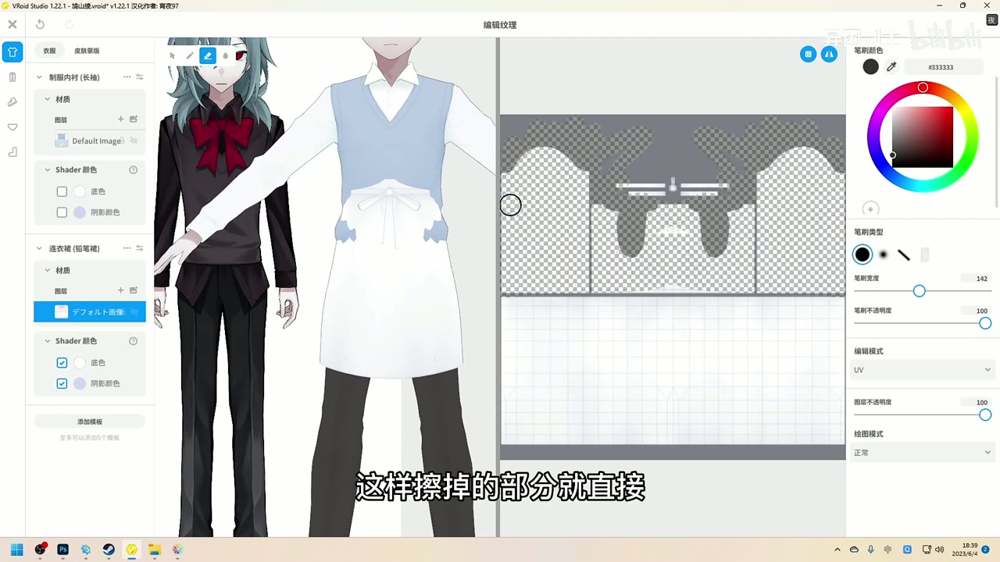
贴图区右上角有个眼睛图标，字幕说「记得要开这个」。选中橡皮擦，把上半部分不需要的擦掉。字幕写到「这样擦掉的部分就直接」就断了，擦过的 UV 变成棋盘格，胸口的白裙被擦开。字幕接着说不完全贴合没关系，可以之后在 Blender 里改，现在先裁出大致的形状。笔刷颜色后来变成 #FEFEFF。字幕还提醒把这个 Shader 颜色也关掉。微调时参数页上能读到下摆加宽 18.750，袖子宽度、袖口松紧、肩斜都是 0.000。裁完以后背心两侧留下两片白衬衫下摆。
蝴蝶结模板对不上，先关掉默认图层
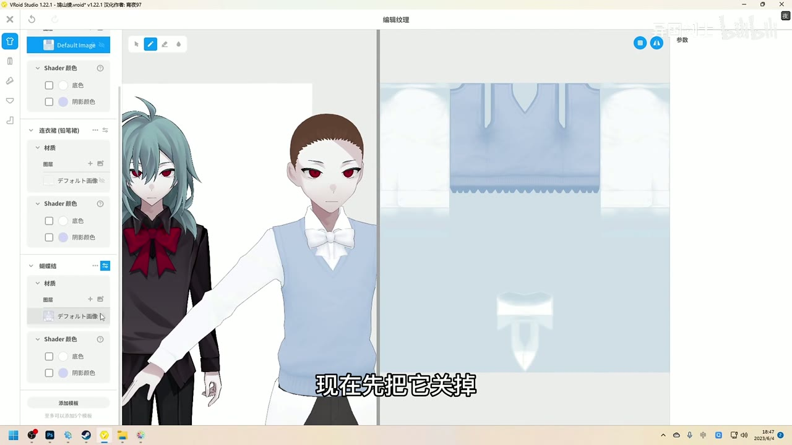
字幕说蝴蝶结也可以在模板里面添加。加上之后领口出现一只白领结，但这个的参数没办法调，形状和原本的立绘差得比较大，之后都可以放到 Blender 里面调。这一帧字幕是「现在先把它关掉」，鼠标停在蝴蝶结默认图层的眼睛上，白领结还在身上。
图层改名，导出贴图和参考线
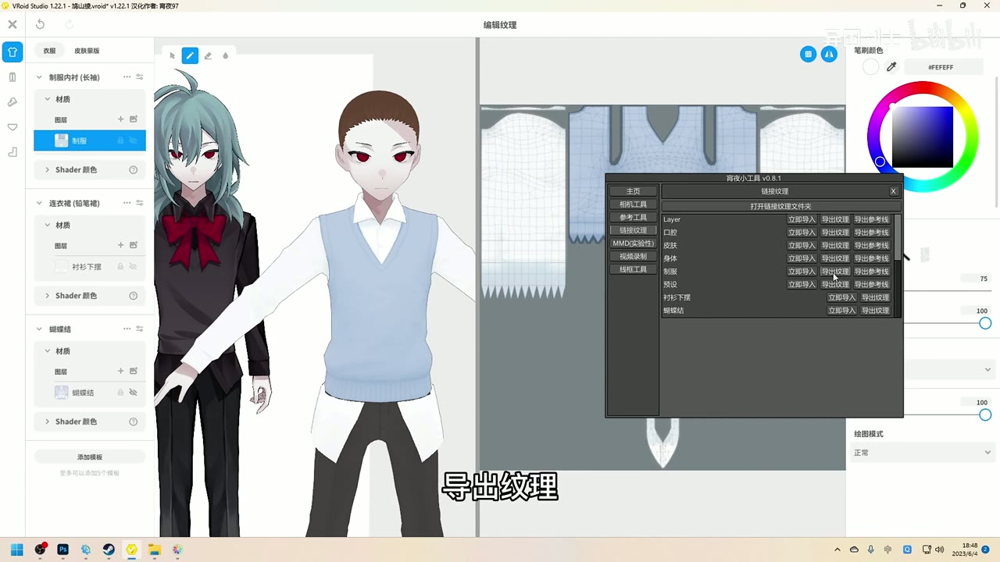
字幕说要画衣服的贴图，先把这里的图层都重命名一遍。制服内衬下的图层改成「制服」，连衣裙那层改成「衬衫下摆」，蝴蝶结那层改成「蝴蝶结」，输入法候选里能看见「制服」。打开链接纹理后，字幕写导出纹理、导出参考线，再把贴图和参考线弄进来。接着打开文件夹，资源管理器停在 VRoid Studio 的 LinkTexture\摘山梗，里面能看到制服和制服_UV。
把上衣拆分单独导出
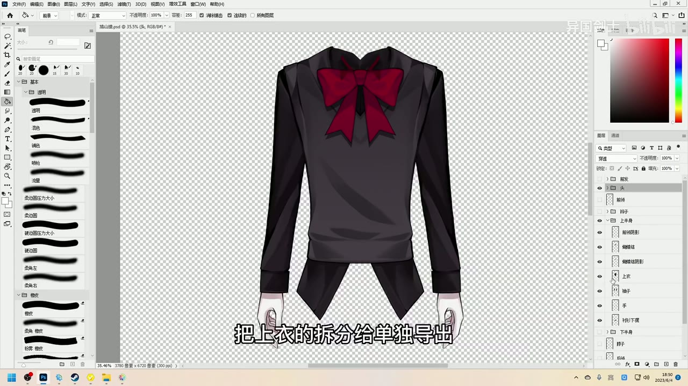
这是立绘原文件，不是 VRoid 里的贴图。字幕说把上衣的拆分给单独导出，还有前领和后领的。括号字幕接着写：后面是画贴图的倍速过程。
在 SAI 里用扭曲把拆分贴上
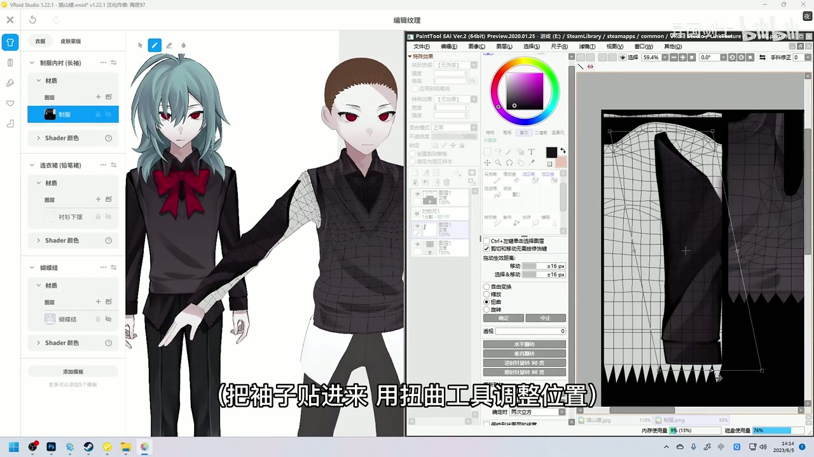
倍速里同一套做法反复用。先把衬衫拆分拖进图层，用扭曲把边缘贴到 UV 上，复制粘贴到背面，再把空隙补全。字幕说可以想象是把立体的服装摊成平面，衔接不上的地方再细化。领口和衣领也这样贴；找朝向时字幕写成「刻舟求剑」，标了痕迹之后找到了，再复制、粘贴、翻转。袖子同样贴进来，用扭曲调位置，然后复制到背面。这一帧一只袖子已经是黑色，另一只还是白网格。袖子之后字幕还有一句，用油漆桶把颜色统一再细化。衣尾是后面单独裁的，字幕写「裁尾部的形状」。
蝴蝶结没有系带，另加一条领带
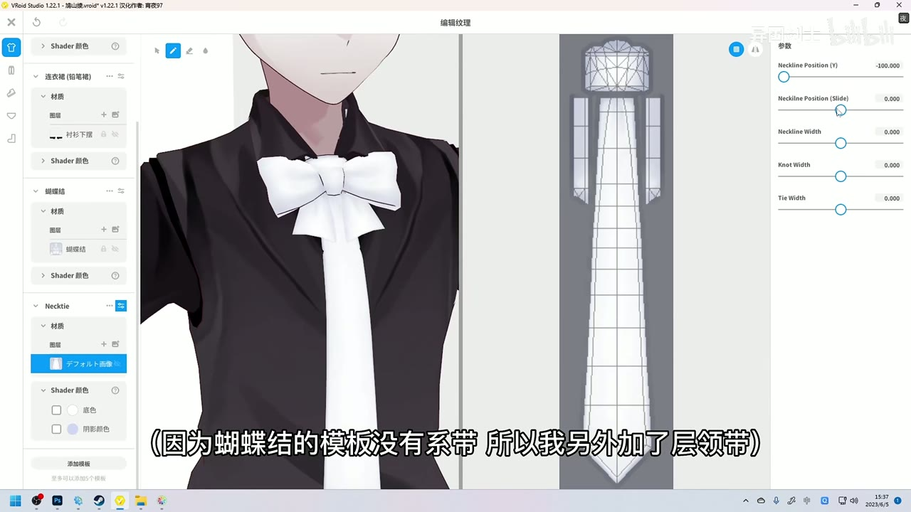
字幕说蝴蝶结的模板没有系带，所以另外加了一层领带。先把除了系带以外的部分擦掉，再把参数调到合适的位置。这一帧领口是白领结加一条大长白领带，Y 读数是 -100.000，另外四条是 0.000，底色和阴影颜色没勾。接着字幕写导出蝴蝶结的拆分。
蝴蝶结阴影用剪贴蒙版
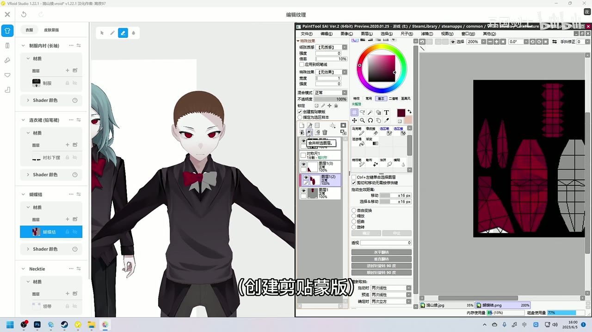
拆开蝴蝶结之后，字幕写其他部分同理：贴上去，复制粘贴，填充空隙再细化。这一帧在做剪贴蒙版，红色块落在蝴蝶结的 UV 里，身上的领结已经是红的，还留着一块灰白色的结。系带颜色是下一步改的，字幕写「改系带的颜色」。
裤腿上加剪裁线
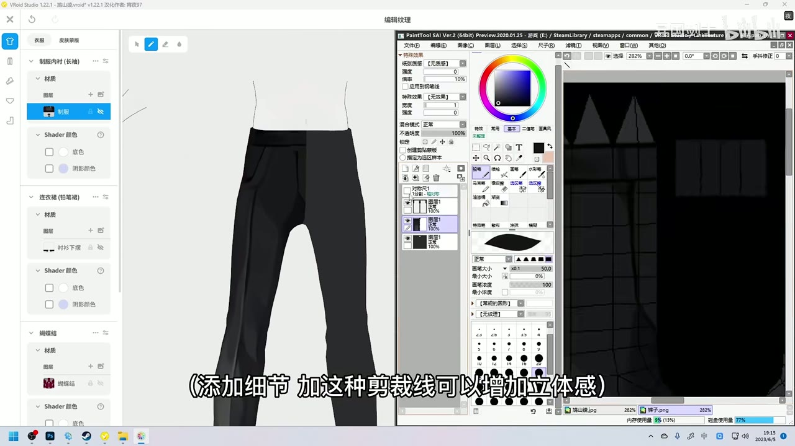
字幕从「贴裤子」开始，先用扭曲改形状，复制粘贴到背面，把空隙补上。中间字幕写「画这个挺无聊的，多点耐心多点爱」。然后在裤腿正面加一条浅色剪裁线，字幕说这种线可以增加立体感。再复制粘贴到另一边，并改衔接处和背面的裤缝。
鞋带单独分一层
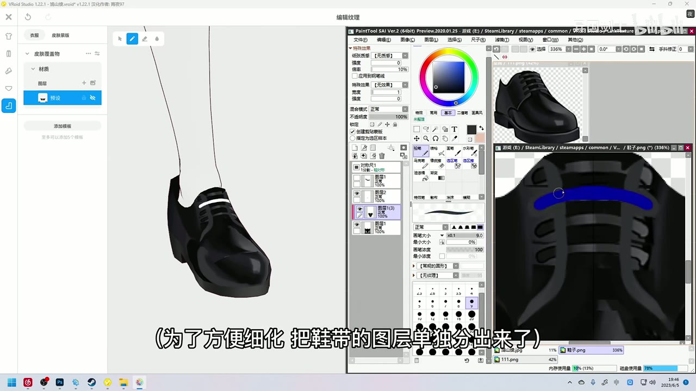
字幕顺序是贴鞋子、拆鞋子，用扭曲把它塞进 UV，调整颜色，把鞋带摆正，参考图放在一边。为了方便细化，鞋带单独分出图层，这一笔是蓝的，画在鞋带那一截上。底下再细化，复制刚画好的鞋带，继续擦。字幕说画差不多了就打开裤子看一下效果，然后画鞋底。画鞋底时字幕又说，发现手腕的阴影有空隙，补全一下。
下巴阴影接到脖子
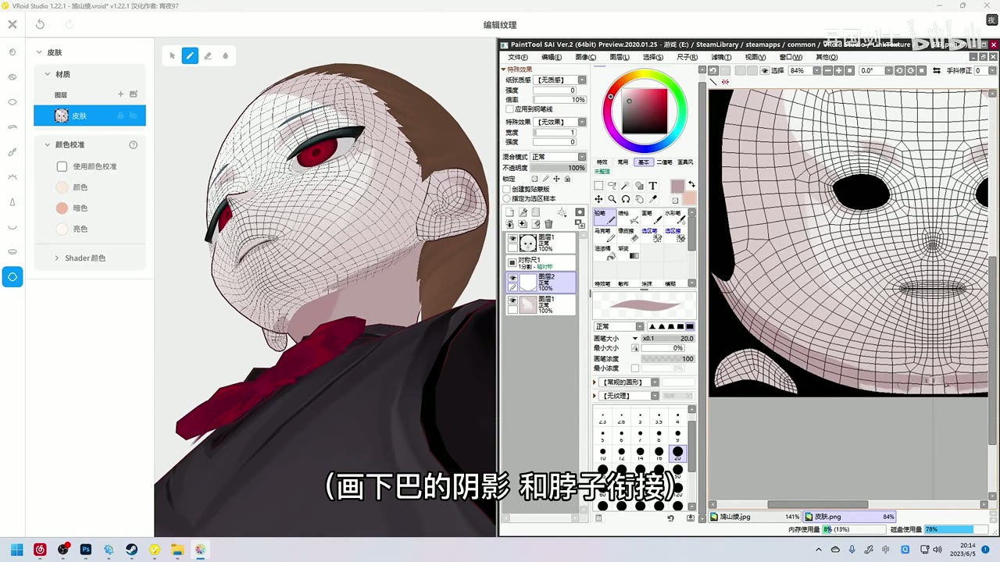
字幕写画下巴的阴影，和脖子衔接。脸的 UV 摊在右边，下巴和领口之间还比较空。紧接着图层换成「身体」，SAI 打开身体.png，字幕是打开身体的贴图、修瑕疵，笔停在浅粉色的身体贴图上。